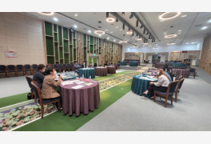

충청북도 영동군
예측 / 이상치 그래프
토픽 모델링 - 한달전
토픽 모델링 - 현재
인구기초통계
방문자 거주지
지역 소비액
관광 관련 뉴스 모음
영동군이 주최하고, 상촌자연산버섯음식거리축제위원회가 주관한 이날 행사는... 지역주민과 관광객이 한데 어우러져 소통과 화합의 장을 즐겼다. 한편, 최고의 맑고...
9월 마지막 주말인 충북 옥천군과 영동군에서 특별한 행사가 열린다. '향수'의 시인 정지용(鄭芝溶·1902... 버섯 육계장과 묵무침, 버섯전을 저렴하게 살 수 있는 할인행사와 축제장을 찾은 주민·관광객을 대상으로 한...

열악한 농작업 환경에도 관심을 가져 농촌 여성이 활용하기 편리한 가볍고 이동이 편한 농작업대를 매년 보급했으며, 순잎따기 장갑 등 편이용품을 활용한 농작업 환경 개선과 지역축제 영동과일음식 홍보로 관광 편의...
더불어, 영동군은 지역의 주요 관광명소인 영동와인터널을 매력을 알리는 한편, 한달여 앞으로 다가온 지역 대표축제인 2022 영동난계국악축제·대한민국와인축제를 홍보하며, 많은 관심과 참여를 당부했다. 3개 3시군은...
지역축제 영동과일음식 홍보로 관광 편의 제공에 노력했다. 최미경 회장은 “이번에 농촌진흥청장상을 수상하게 된 것을 매우 자랑스럽게 생각하며, 이 상을 받을수...

더불어, 영동군은 지역의 주요 관광명소인 영동와인터널을 매력을 알리는 한편, 한달여 앞으로 다가온 지역 대표축제인 2022 영동난계국악축제·대한민국와인축제를 홍보하며, 많은 관심과 참여를 당부했다. 3개 3시군은...